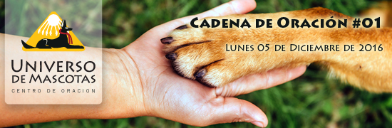

|  |
| ¡Hola #nombreonick!! |
|
Rey:
Rey se escapó de su casa, fue un segundo, un descuido que quedó la puerta abierta. Su familia mantiene las esperanza de que aparezca. Sasha:Sasha tenia solo 4 meses cuando falleció, tenia toda una vida por recorrer. Roma:Roma de casi 3 meses es hija decomenzó a deteriorarse después de su primer vacuna, ya pasaron muchos días y cada vez está más débil. Se la está hidratamos con suero y alimentando con nutrientes en jarabe. Puede ser una bacteria o virus desconocido para los veterinarios. Esta medicada y rodeada de cariño. |
| Oremos por: |

|
| wwww.universodemascotas.org |